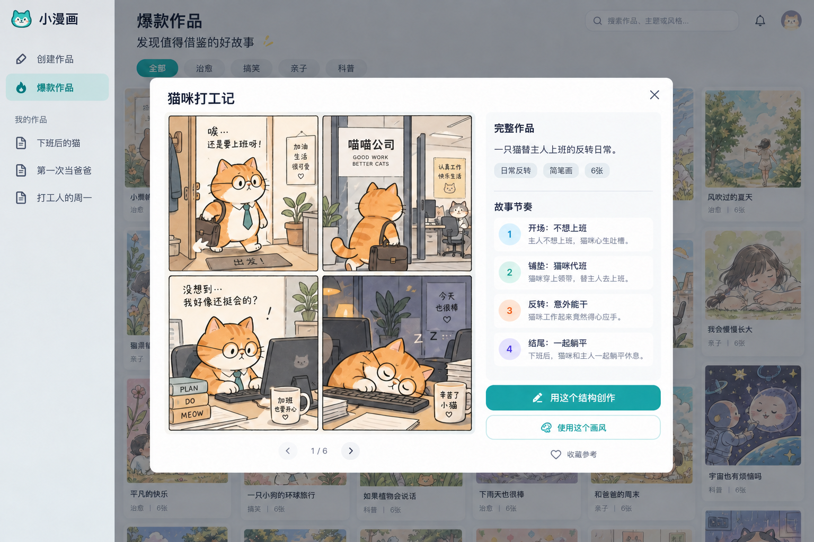
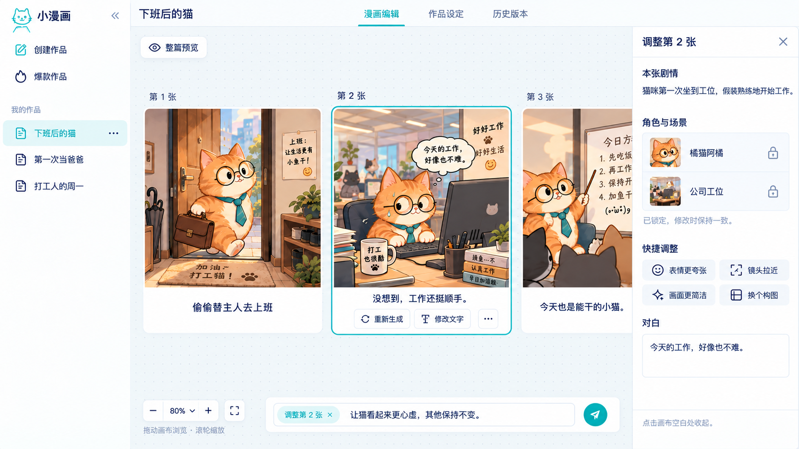
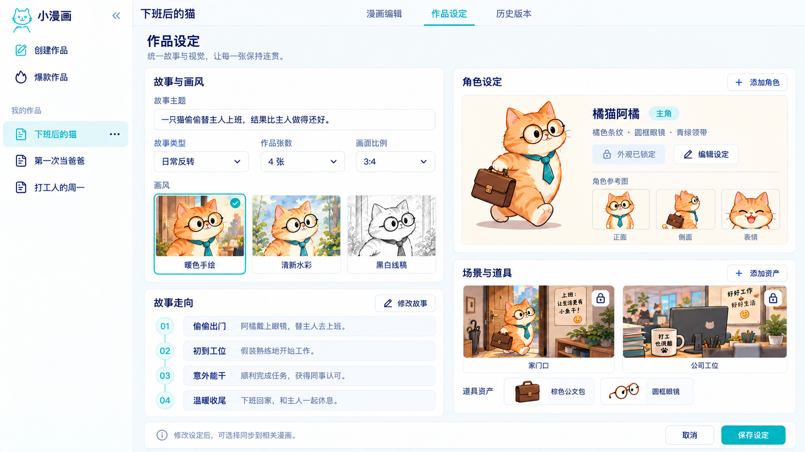

六个页面 · 2026-09-16 · 点击图片查看原图
底部无内边框的多行输入；模板、尺寸、张数、更多设置同排；发送图标。
瀑布流与详情弹窗共用参考。首版展示六套示例；顶部旧图中的头像、通知不实现。

单行横向画布；选中卡片才显示右栏。所有作品页补齐右上角发布入口。

故事与画风、角色、故事走向、场景道具。补齐右上角发布入口。

版本列表、只读预览、差异和恢复；恢复创建新版本。补齐右上角发布入口。
按平台维护封面、标题、描述、标签；生成、修改、复制与导出。